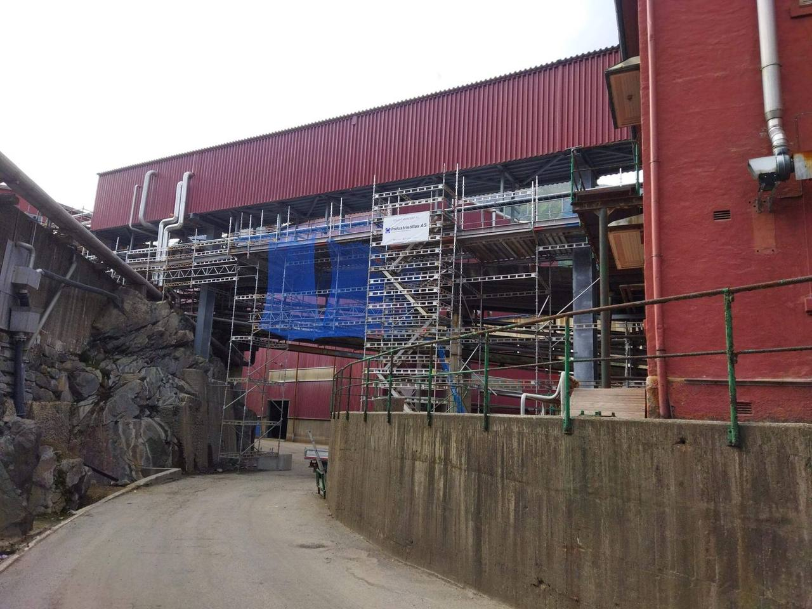
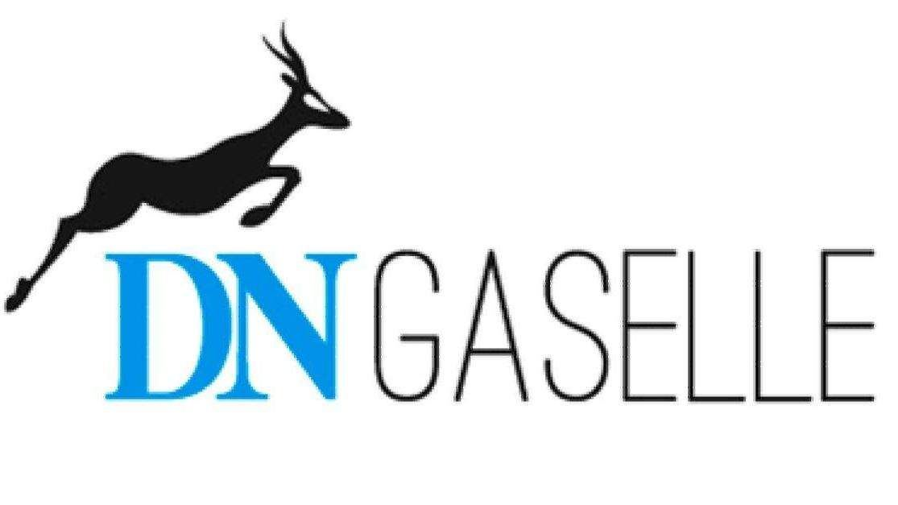

Stillas · rigg · industrielt vedlikehold
Din leverandør av sikker adkomst.
Industristillas AS leverer stillaspersonell, stillasutstyr og gjennomfører stillasprosjekter. Onshore og offshore, fra basen på Karmøy og ut til anlegg langs hele kysten.
- Gaselle
- flere år på rad i DN
- On/offshore
- oppdrag langs hele kysten
- Haki
- stillassystem og utstyr
- Karmøy
- base på Sævelandsvik
Tre ting vi gjør hver uke.
Kjerneområdet er stillasleveranser: vi leverer personell, utstyr og gjennomfører prosjektet. I tillegg tar vi oppdrag innen industriell rengjøring og vedlikehold, og stiller med riggerkompetanse der det trengs.
Stillasleveranser
Personell, utstyr og gjennomføring av stillasprosjekt — fra tette stillaser og trappetårn til telt over synkehull.
Les mer →Bemanning og rigg
Stillasere og riggere med erfaring. Flere av våre ansatte har riggerkompetanse og mekanisk erfaring og kan bidra bredt.
Les mer →Rengjøring og vedlikehold
Industriell rengjøring og vedlikehold på anlegg, utført av folk som kjenner sikkerhetsrutinene på stedet.
Les mer →Der stillaset står.
Vi bygger stillas der andre bygger hus, tunneler og anlegg. Her er et utvalg fra de siste årene.
Ingen jobb er så viktig at den ikke kan gjøres trygt.
Vårt fokus på HMS og kvalitet, og stadig påfyll av kurs og utdanning, gjør at vi kan levere tjenester med høy kvalitet på en sikker måte. Det er ikke et slagord — det er grunnen til at kundene ringer oss igjen.
- 01Kurs før oppdragAlle som går ut på anlegg har dokumentert opplæring i stillas, fallsikring og sikker jobbanalyse.
- 02Sikker jobbanalyseFør montering går vi gjennom adkomst, værforhold, kranløft og hva som kan gå galt — sammen med kunden.
- 03Ryddighet på anleggetStillaset skal være merket, kontrollert og ryddet. Det er der ulykkene unngås, ikke i permer.


Gasellebedrift flere år på rad.
Vi er et firma i vekst som leverer stadig sterkere resultater. Industristillas AS har mottatt utmerkelsen som gasellebedrift gjennom Dagens Næringsliv flere år på rad.
Våre ansatte har god stillaskompetanse og erfaring. Vi er stolte av folkene våre, som alltid står på og finner effektive og sikre løsninger for kundene.
Trenger du stillas denne uken?
Ring oss, så avklarer vi behov, adkomst og tid — og setter opp et tilbud som er til å lese.
Vestre karmøyveg 266
4275 Sævelandsvik
412 25 723 · 400 22 978